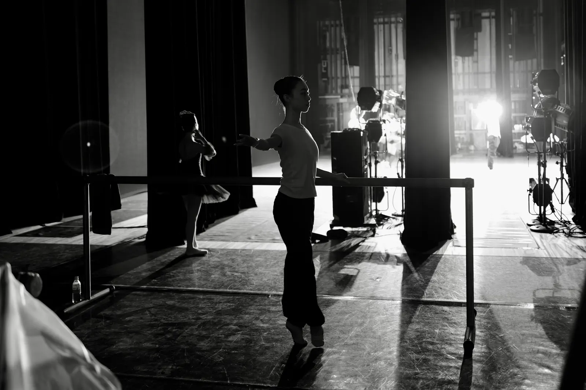
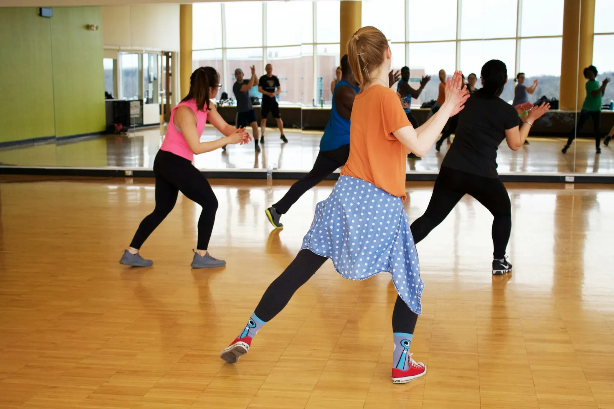
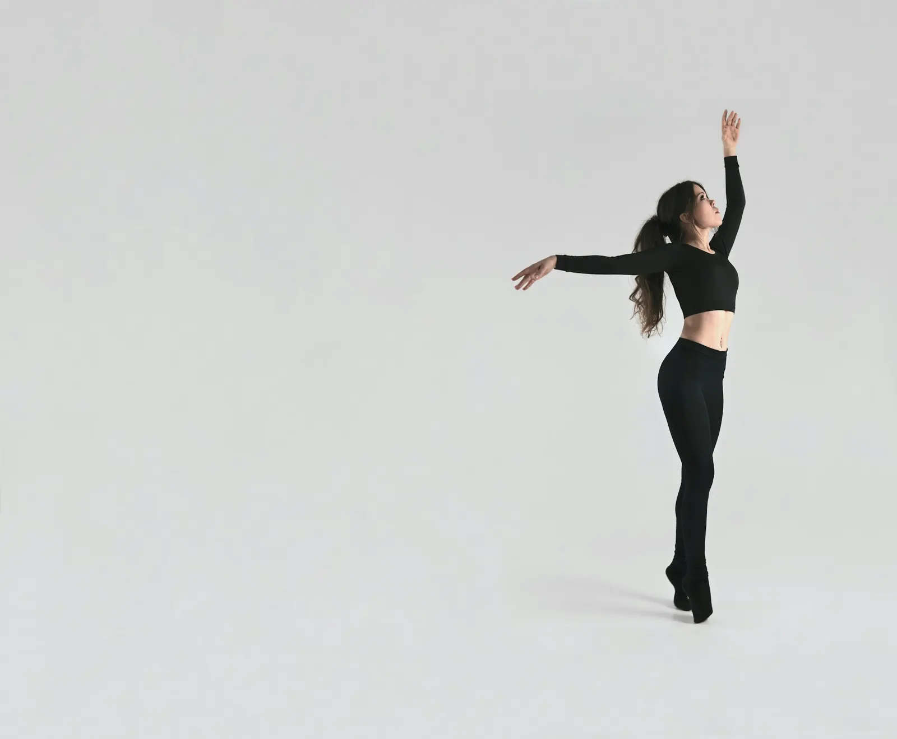
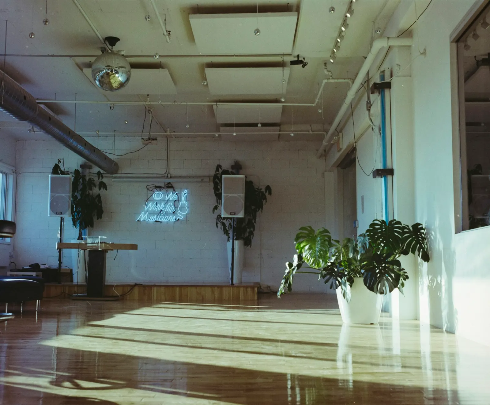

01
Ballet clássico
Base, postura e musicalidade. Método progressivo, da barra ao centro, com ponta só quando o corpo estiver pronto.

Matrículas 2027 abertas · Perdizes, SP
Seis modalidades, turmas a partir dos 3 anos e professores que lembram o seu nome. Ninguém precisa chegar sabendo: a primeira aula é por nossa conta.
01 · Modalidades
Cada modalidade tem trilha do iniciante ao avançado. Dá para fazer duas ao mesmo tempo, e muita gente faz.

Base, postura e musicalidade. Método progressivo, da barra ao centro, com ponta só quando o corpo estiver pronto.

Energia, giros e coreografia do primeiro dia.

Grooves, freestyle e batalhas amistosas no fim do mês.

Chão, improviso e criação. Para quem quer se expressar.
Forró, samba de gafieira e zouk. Não precisa vir com par: a turma gira.
De 3 a 6 anos: brincadeira com música, coordenação e muita imaginação. Pais assistem a última aula do mês.
02 · Turmas
Na aula experimental a professora observa e indica o nível. Sem teste, sem pressão. Você muda de turma quando estiver pronto, não quando o calendário manda.

Musicalidade, coordenação e brincadeiras de roda. Aulas de 45 min.
Ballet, jazz e hip hop com base técnica e muita coreografia.
Técnica mais firme, criação em grupo e preparação para festivais.
Para quem nunca dançou, para quem parou e para quem não para nunca.
Dança de salão e alongamento com ritmo leve. Muito riso garantido.
03 · Grade de horários
Horários de exemplo. A grade completa e atualizada sai pelo WhatsApp da recepção.
04 · Planos
1× por semana
R$189/mês
Uma modalidade, uma aula por semana. Bom para começar sem pressa.
Mais escolhido
2× por semana
R$279/mês
O ritmo em que o corpo aprende de verdade. Dá para misturar modalidades.
Passe livre
R$389/mês
Todas as aulas da grade do seu nível, quantas quiser. Para quem vive aqui.
Valores de exemplo. Matrícula única de R$ 80 · irmãos têm 10% de desconto · plano semestral com 1 mês grátis.

05 · Aula experimental
06 · Professores
Equipe fictícia para demonstração. Troque pelos nomes, fotos e histórias reais da sua escola.
Ballet e baby class
Formada em dança, dá aula para crianças há mais de uma década e ainda se emociona em todo espetáculo.
Hip hop
Veio das batalhas de rua. Ensina fundamento primeiro e estilo depois, sempre com a turma em roda.
Jazz e contemporânea
Coreógrafa dos espetáculos da casa. Acredita que todo corpo tem uma dança própria esperando.
Dança de salão
Casal na pista e na vida. Puxam o baile de sexta e fazem até o mais tímido sair dançando.

07 · Espetáculo de fim de ano
13&14
dezembro · teatro parceiro (endereço a definir)
Do baby class ao adulto avançado, cada turma monta a sua coreografia ao longo do semestre. Figurino emprestado pela escola, ensaio geral com tudo que um palco de verdade tem e uma plateia que aplaude de pé.
08 · Quem dança aqui
Depoimento de exemplo
“Entrei com 41 anos sem nunca ter feito uma aula. Na terceira semana já sabia a coreografia inteira de jazz.”
Depoimento de exemplo
“Minha filha conta os dias até a aula de sábado. E o espetáculo de dezembro fez a família inteira chorar.”
Depoimento de exemplo
“Vim pelo hip hop e fiquei pela turma. O Téo cobra fundamento, mas a aula parece festa.”
09 · Dúvidas
Não achou a sua? Pergunte pelo WhatsApp, a recepção responde no mesmo dia.
Pode e deve. As turmas iniciantes são feitas exatamente para quem nunca dançou ou parou há muito tempo. A professora adapta os movimentos e ninguém fica para trás.
Roupa confortável que deixe você se mexer e uma garrafinha de água. Para ballet, meia e sapatilha ajudam, mas não são obrigatórias na aula experimental.
Avise a recepção até 2 horas antes e reponha em outra turma do mesmo nível no mesmo mês. A quantidade de reposições depende do seu plano.
A participação está incluída em todos os planos e o figurino é emprestado pela escola. Os ingressos para a plateia são vendidos à parte, com preço acessível para a família.
Para as crianças se concentrarem, as aulas são fechadas. Na última aula de cada mês a sala abre para as famílias assistirem.
No plano mensal, não. Basta avisar até o dia 20 para não ser cobrado no mês seguinte. O semestral tem desconto e regras próprias, explicadas na matrícula.
10 · Matrícula
Preencha e a mensagem sai pronta para o nosso WhatsApp. A recepção confirma a sua aula experimental ou a matrícula. Nada fica salvo no site.
11 · Onde estamos